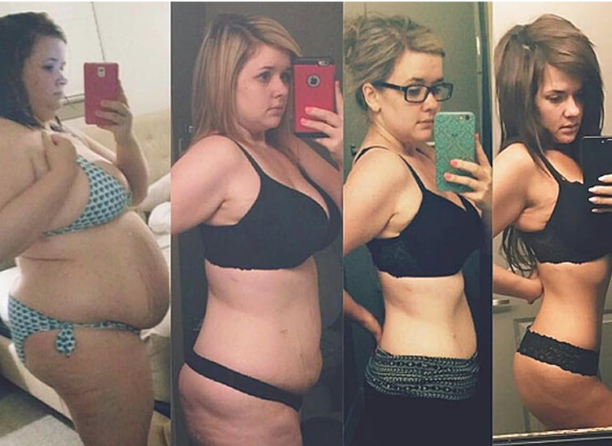
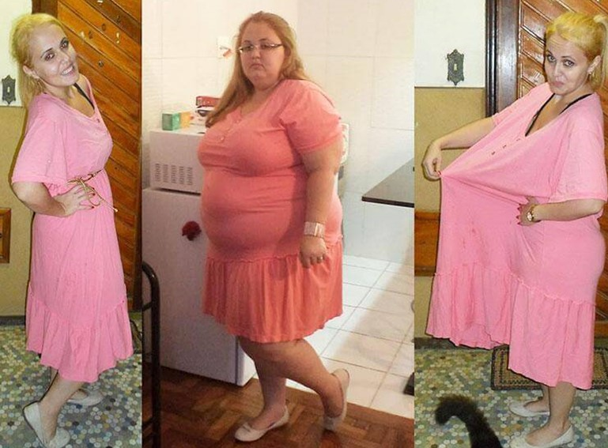

Δεν υπάρχει περίπτωση να μη χάσετε βάρος!
Ένας γνωστός διατροφολόγος διηγήθηκε για μια νέα τάση στο χάσιμο βάρους - τις σταγόνες Fortunella που καίνε τελείως αυτόματα το εσωτερικό λίπος
Το υπερβολικό βάρος είναι επικίνδυνο για την υγεία και την προσωπική ζωή του ανθρώπου. Οι γιατροί δεν κουράζονται να το επαναλαμβάνουν. Όμως, όσοι έχουν υπερβολικό βάρος γνωρίζουν πόσο δύσκολο είναι να αντιμετωπιστεί. Ειδικά αν δεν έχετε 2 - 3 επιπλέον κιλά, αλλά δεκαριά ή και παραπάνω.
Ωστόσο, σήμερα, ακόμη και σε αυτήν την περίπτωση, ΜΠΟΡΕΙΤΕ ΝΑ ΧΑΣΕΤΕ ΒΑΡΟΣ. Και μάλιστα - τώρα είναι εύκολο να το κάνετε! Το , οι επιστήμονες έκαναν μια σημαντική ανακάλυψη στη διαιτολογία - έμαθαν τι ακριβώς στο σώμα αναγκάζει το λίπος να μετατρέπεται σε μύες και ενέργεια, και έμαθαν πώς να το ελέγχουν. Χρησιμοποιώντας τη νέα μέθοδο, είναι αδύνατο να μην χάσετε βάρος, και η καταπολέμηση του υποδόριου λίπους πραγματοποιείται στο επίπεδο των βιοχημικών διεργασιών.
Περισσότερα σχετικά με τη νέα μέθοδο απώλειας βάρους, δηλαδή για τις φυσικές σταγόνες Fortunella, ζητήσαμε να μας εξηγήσει η διάσημη διατροφολόγος, ιατρός της ανώτατης κατηγορίας, την Μαρία Τόμπρα
Μαρία Τόμπρα
- Ποια είναι η σημασία των φυσικών σταγονών Fortunella και με ποιο τρόπο σας επιτρέπουν να αντιμετωπίσετε τα επιπλέον κιλά;
- Κοιτάξτε. Η ουσία των φυσικών σταγονών Fortunella είναι η ανοικοδόμηση του σώματος για τη λιπόλυση (ο μετασχηματισμός των λιπών σε ενέργεια) από τη γλυκόλυση (διάσπαση των υδατανθράκων). Το σώμα μας είναι πολύ ευέλικτο και έχει τεράστιες δυνατότητες στην προσαρμογή. Όταν σταματάμε να τρώμε υδατάνθρακες, το σώμα αρχίζει να χρησιμοποιεί τα αποθηκευμένα λίπη.
Πώς συμβαίνει αυτό; Στο ήπαρ, με μακρόχρονη απουσία υδατανθράκων στο φαΐ (2η-3η εβδομάδα), αρχίζουν να παράγονται κετόνες. Ταξιδεύοντας μέσα στο σώμα με το αίμα, αυτοί μετατρέπουν τα λίπη σε ενέργεια που χρειαζόμαστε.
Αυτός ο μηχανισμός επεξεργασίας αποθηκευμένων λιπών έχει ανακαλυφθεί από τους επιστήμονες σχετικά πρόσφατα. Και σήμερα θεωρείται το πιο ελπιδοφόρο στην καταπολέμηση κατά των επιπλέον κιλών. Με τη βοήθεια των φυσικών σταγονών Fortunella, σύμφωνα με στατιστικά στοιχεία, 99 από τους 100 ανθρώπους αδυνατίζουν, ανεξάρτητα από τους λόγους που απέκτησαν το επιπλέον βάρος, και της ηλικίας, του φύλου ή των προσωπικών προτιμήσεων στη διατροφή. Η απώλεια βάρους συμβαίνει αναπόφευκτα στο επίπεδο της βιοχημείας.
Οι φυσικές σταγονών Fortunella είναι πολύ πιο αποτελεσματικές από τις περισσότερες γνωστές δίαιτες. Για παράδειγμα, του Dukan ή του Atkins. Και όχι μόνο δεν βλάπτει το σώμα όπως αυτές οι δίαιτες, αλλά το θεραπεύει. Πρόκειται για πραγματική πρόοδο στη διαιτολογία.
- Μόλις είπατε ότι με τη βοήθεια των φυσικών σταγονών Fortunella ο άνθρωπος μπορεί αυτομάτως να χάσει βάρος, ανεξάρτητα από τις προτιμήσεις του στη διατροφή. Επιπλέον, είπατε πριν από αυτό πως για να ξεκινήσει η κέτωση, οι υδατάνθρακες πρέπει να αποκλειστούν από τη διατροφή. Πως και έτσι;
- Στην πραγματικότητα, δεν υπάρχει καμία αντίφαση. Το θέμα είναι ότι η ίδια η κετονική διατροφή είναι πολύ περίπλοκη και δύσκολη στην ανεκτικότητα. Δηλαδή, αποκλείοντας εντελώς τους υδατάνθρακες για να ενεργοποιηθεί η κέτωση, θέτουμε σε μια εξαιρετικά σοβαρή δοκιμασία το σώμα, που λίγοι το αντέχουν. Μόνο αν βρεθεί σε ένα ερημικό νησί όπου δεν θα υπάρχει φαγητό. Στον κανονικό κόσμο αυτό είναι αδύνατο.
Ωστόσο, οι επιστήμονες το έχουν σκεφτεί. Η ουσία είναι ότι τα κετόνια παράγονται όχι μόνο από το ανθρώπινο ήπαρ. Αυτές οι ουσίες, ή μάλλον τα ανάλογά τους σε δράση, υπάρχουν σε ορισμένα φυτά μόνο. Το , οι Αμερικανοί διατροφολόγοι έκαναν μια σημαντική ανακάλυψη - κατάφεραν να τραβήξουν κετόνες από μούρο! Δηλαδή, θέλω να το επαναλάβω άλλη μια φορά, για το χάσιμο βάρους με τη βοήθεια κετόζης, δεν χρειάζεται να αποκλείσετε καθόλου τους υδατάνθρακες, ούτε να αλλάξετε κάτι στη συνήθη διατροφή σας.
Η απώλεια βάρους με την κέτωση είναι καλή, επειδή συνδυάζει υψηλή απόδοση και απλότητα. Το μόνο που απαιτείται από ένα άνθρωπο - είναι να προσθέσει κετόνες στη διατροφή του. Αλλά στην πραγματικότητα, αρκεί μόνο να παίρνει καθημερινά σταγόνες Fortunella που περιέχουν αυτές τις κετόνες. Καταλήγοντας στο αίμα, θα εκτελέσουν την ίδια λειτουργία με τα κετόνια που παράγονται στο ήπαρ του ίδιου του ατόμου. Συγκεκριμένα, διασπά το συσσωρευμένο λίπος σε όλο το σώμα.
Όσο περισσότερο ο άνθρωπος παίρνει αυτές τις φυσικές σταγόνες Fortunella, τόσο περισσότερο χάνει το βάρος. Επειδή οι κετόνες επεξεργάζονται αυτόματα το λίπος. Φανταστείτε, για παράδειγμα, πως το λίπος έχει συσσωρευτεί σε ένα πιάτο. Και σε αυτό το λίπος έχετε βάλει μία σταγόνα απορρυπαντικού πιάτων. Το λίπος άρχισε να διαλύεται. Φυσικά, αυτή είναι μια πολύ χοντρή σύγκριση. Αλλά περίπου το ίδιο συμβαίνει στο επίπεδο του οργανισμού. Και αυτό είναι αναπόφευκτο.
αυτό συμβαίνει τελείως αυτόματα. Ο ίδιος ο άνθρωπος δεν αισθάνεται καμία αρνητική στιγμή, δεν χρειάζεται να κάνει αθλήματα για να χάσει βάρος, δεν χρειάζεται ούτε να στερείται από φαΐ. Εάν αποκτήσετε μια συνήθεια να ανεβαίνετε στην ζυγαριά το πρωί, τότε μετά τη λήψη κετονών θα παρατηρείτε τη μείωση του βάρους κάθε μέρα.
Θέλω να σας δείξω κάποιες φωτογραφίες των πελατών μου που έχουν χάσει βάρος με τη βοήθεια της κετόζης. Αυτές είναι οι πιο δύσκολες περιπτώσεις - χωρίς κετόνες, αυτοί οι άνθρωποι πριν από αυτό δεν μπορούσαν να χάσουν βάρος.
Έλσα, πριν - 107κιλά, μετά - 54κιλά
Εύη, πριν - 120κιλά, μετά - 65κιλά

Μαρία, πριν 105 κιλά, μετά - 55 κιλά
Και θέλω να προσθέσω, αυτή η μέθοδος δεν είναι μόνο εντελώς ασφαλής, αλλά και ωφέλιμη για το σώμα. Οι άνθρωποι μετά την απώλεια βάρους γίνονται υγιείς κιόλας.
- Πώς να παίρνουμε τις κετόνες; Σε ποιο φάρμακο εμπεριέχονται;
- Μέχρι στιγμής, υπάρχει μόνο μία σύνθεση που περιέχει σωμάτια φυτικής κετόνης. Ονομάζεται Fortunella. Σήμερα, αυτή η σύνθεση χρησιμοποιείται από 80% των διατροφολόγων, επειδή παρέχει γρήγορη και εύκολη απώλεια βάρους. Ακριβώς αυτό συστήνουν στις περισσότερες περιπτώσεις στους πελάτες τους.

Fortunella
Εκτός από τα σώματα κετονών, το Fortunella περιέχει περίπου 10 επιπλέον συστατικά απαραίτητα για γρήγορη και εύκολη απώλεια βάρους. Στόχος τους είναι η ενίσχυση της δράσης των κετονών, καθώς και η υποστήριξη του σώματος κατά την απώλεια βάρους. Δεν θα τα αναφέρω όλα, αλλά μόνο κάποια από αυτά.
| Αγκινάρα | Μία αγκινάρα έχει μόλις 60 θερμίδες, αρκετές φυτικές ίνες και καθόλου λίπος. Αποτελεί ιδανική επιλογή για εκείνους που προσέχουν τη σιλουέτα τους. Περιέχει κυναρίνη που βοηθά στην αποτελεσματικότερη πέψη των λιπών και απορρόφηση των βιταμινών από το φαγητό μας, επίσης περιέχει βιταμίνες Α, C και του συμπλέγματος Β, ασβέστιο, φώσφορο, κάλιο, φυλλικό οξύ, μαγνήσιο, και πολλά φλαβονοειδή. |
| Κουμ κουάτ | Επηρεάζει τη ρύθμιση της έκφρασης γονιδίων, που εμπλέκονται στο μεταβολισμό της γλυκόζης και των λιπιδίων. Το εκχύλισμα από κουμ κουάτ ανήκει σε συμπληρώματα διατροφής, που βοηθούν στον έλεγχο του σωματικού βάρους αλλά και των μεταβολικών ασθενειών που εμπλέκονται με την παχυσαρκία, όπως το μεταβολικό σύνδρομο, σακχαρώδης διαβήτης και υπερχοληστερολαιμία. |
| Σπανάκι | Είναι μια εξαιρετική πηγή βιταμίνης Α, βιταμίνης C, βιταμίνης Κ, ριβοφλαβίνης και βιταμίνης Β6, βιταμίνης Ε, ασβεστίου, καλίου, φυτικών ινών, μαγνησίου, φολικού οξέος και σιδήρου. Τα 100 γραμμάρια σπανάκι έχουν μόνο 23 θερμίδες. Θεωρείται ως superfood. |
| Εκχύλισμα κόλιανδρου | Είναι ένα φυτό με πολλές βιταμίνες, κυρίως βιταμίνες Α και Κ αλλά επίσης B, C και Ε. Πλούσιο σε αντιοξειδωτικά και βοηθά στον καθαρισμό του σώματος. |
| L-καρνιτίνη | Λόγω του ότι μεσολαβεί στο μεταβολισμό των λιπαρών οξέων, έχει προταθεί ως βοήθημα για την απώλεια βάρους. Ορισμένες μελέτες έδειξαν ότι βοηθά στη μείωση της λιπώδους μάζας, στην αύξηση της μυϊκής μάζας καθώς και στην αύξηση των επιπέδων ενέργειας. |
Θέλω να σας δείξω τα αποτελέσματα των δοκιμών αυτής της σύνθεσης στο Ινστιτούτο Βερολίνου διαιτολογίας και την σωστής διατροφής. Συνολικά, στις εξετάσεις συμμετείχαν περίπου 1000 εθελοντές που έχουν παχυσαρκία. Όλοι έπαιρναν το Fortunella για ένα μήνα.
Αποτελέσματα δοκιμών:
- Χάσανε βάρος κατά 10 κιλά και περισσότερο - οι 18% των μελετηθέντων
- Χάσανε βάρος κατά 5-10 κιλά και περισσότερο - οι 77% των μελετηθέντων
- Χάσανε βάρος λιγότερο από 5 κιλά - οι 4% των μελετηθέντων
- Δεν έχασαν ούτε ένα κιλό - το 1% των μελετηθέντων
- Βελτίωση της κατάστασης του δέρματος, καταπολέμηση της κυτταρίτιδας - οι 98% των μελετηθέντων
- Κανονικοποίηση των βιοχημικών διεργασιών στο αίμα - 100% των μελετηθέντων
- Μη ύπαρξη παρενεργειών και εθισμού - το 100% των μελετηθέντων
Δηλαδή, όπως βλέπετε, Fortunella βοηθά σχεδόν όλους. Όλοι όσοι αρχίζουν να το παίρνουν, ΕΓΓΥΗΜΕΝΑ χάσουν βάρος. Η σύνθεση μπορεί να ληφθεί τόσο με πολύ βάρος (όταν το υπερβολικό βάρος απειλεί την υγεία), και μάλιστα με λίγα επιπλέον κιλά, όταν, για παράδειγμα, θέλετε να χάσετε βάρος για τις διακοπές.
- Πού μπορώ να πάρω τις σταγόνες FORTUNELLA και πόσο κοστίζει περίπου;
- Ο πιο εύκολος τρόπος είναι να παραγγείλετε τις σταγόνες FORTUNELLA μέσω της επίσημης φόρμας παραγγελίας, ή με courier σε οποιοδήποτε μέρος της Ελλάδας.
Όπως το προανέφερα, σήμερα το χάσιμο βάρους με τη δίαιτα με κετόνη είναι εξαιρετικά δημοφιλής και συνεπώς υπάρχουν πολλά ψεύτικα προϊόντα, τα οποία δεν δίνουν κανένα αποτέλεσμα. Γι 'αυτό προτείνουμε να παραγγείλετε τις σταγόνες FORTUNELLA μέσω της επίσημης φόρμας παραγγελίας! Πωλούνται μόνο γνήσια προϊόντα.
Με την ευκαιρία, τώρα στην ιστοσελίδα υπάρχει μια εξαιρετική προσφορά όπου οι σταγόνες FORTUNELLA μπορούν να αγοραστούν με έκπτωση 50%! Θέλω απλώς να σας προειδοποιήσω ότι, από όσο γνωρίζω, ο κατασκευαστής έχει προσφέρει μόνο μια μικρή παρτίδα επίσημου φάρμακου και θα τελειώσει γρήγορα. Επομένως, εάν θέλετε να παραγγείλετε τις σταγόνες FORTUNELLA πολύ φθηνότερο από το συνηθισμένο κόστος (και να ξέρετε ότι το ίδιο το φάρμακο είναι αρκετά ακριβό), πρέπει να αφήσετε το αίτημα σας το συντομότερο δυνατό, ενώ τα διαφημιστικά πακέτα είναι ακόμα διαθέσιμα.
Η επίσημη φόρμα παραγγελίας σταγονών Fortunella στην ΕλλάδαΣχόλια
Ελένη
Αλίκη Κ.
Αικατερίνη
Κούλα
Ελίσαβετ Β.

Θωμάς Πετρίδης
Βίκυ
Μαρία Φ.
Ρούλα Ανδρεάδου
Βάγγη
Εύη Λ.
Τζίμης Ευαγγέλου
Ειρήνη
Φαιή Δ